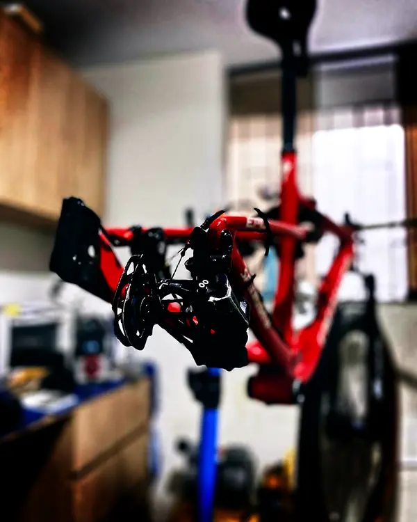

[ PROTOCOL 6.35 — PIVOT BEARING KINEMATICS ]MANTENIMIENTO PREMIUM DOBLE SUSPENSIÓN EN TRUJILLO — SISTEMA COMPLETO + RODAMIENTOS
El pivote no es solo un eje. Es un sistema cinemático.
Una bicicleta de doble suspensión funciona mediante un sistema de enlace que convierte el recorrido de la rueda trasera en compresión del amortiguador. Cada punto de ese enlace trabaja sobre rodamientos de precisión.
El diámetro interior más común en rodamientos de pivote es:
ø_i = 6.35 mm (¼ inch)
Un rodamiento de 6.35 mm de diámetro interior expuesto a barro, agua y polvo durante 200 horas de trail no tiene la misma vida útil que el mismo rodamiento en condiciones controladas. La contaminación reduce la vida L₁₀ por un factor de 2 a 10 dependiendo del nivel de suciedad.
La proporción de velocidades angulares en los brazos del sistema de enlace determina el ratio de aprovechamiento de la suspensión:
L_r = dWheel / dShock
Cualquier holgura en los pivotes introduce histéresis en ese sistema — el amortiguador responde tarde o con imprecisión, la bicicleta pierde sensibilidad en la plataforma de pedaling y las fuerzas de impacto no se absorben correctamente.
Protocolo 6.35 — Cobertura completa
- Desmontaje completo del tren trasero: retiro del amortiguador, bieletas, brazos y todo el sistema de enlace según especificación del fabricante
- Extracción de todos los rodamientos de pivote (entre 8 y 16 rodamientos según sistema: 4-bar, Horst Link, VPP, DW-Link, Maestro, etc.)
- Extracción de ejes de pivote e inspección de superficies de rodadura en los alojamientos del cuadro
- Limpieza de todos los componentes con desengrasante técnico
- Inspección individual de cada rodamiento: juego radial, juego axial, resistencia al giro, presencia de pitting o flatspots
- Reemplazo selectivo o total según diagnóstico (rodamientos a cotizar por especificación exacta)
- Reengrase de rodamientos que pasan inspección con SKF LGHP 2/1
- Prensado de rodamientos con adaptadores de diámetro exacto — nunca a golpe
- Ensamble del sistema de enlace con todos los ejes lubricados con grasa de cobre o Motorex según especificación de material
- Torque certificado en todos los ejes, pernos y pasadores según Nm del fabricante
- Verificación de ausencia de juego en el sistema tras ensamble
- Adicionalmente: servicio de rodamientos de pedalier, mazas y dirección (igual que protocolo Cr.08)
Por qué el cuadro es tan importante como los rodamientos
Un rodamiento dañado cuesta entre S/ 8 y S/ 30. Un alojamiento de pivote dañado en un cuadro de carbono puede costar S/ 500 o significar un cuadro inútil.
El servicio preventivo de pivotes protege la estructura del cuadro. No es opcional en bicicletas de doble suspensión usadas con frecuencia.
BikeLab Studio — Servicio de pivotes y rodamientos en Trujillo
Calle Paraguay 300 – Urb. El Recreo – Trujillo
Lunes a sábado · 11:00 – 19:00
AGENDAR — RODAMIENTOS DOBLE SUSPENSIÓNInversión_
Incluye servicio completo de todos los rodamientos y pivotes del cuadro full suspension, más pedalier, mazas y dirección. Grasa SKF LGHP 2/1. Rodamientos de reemplazo a cotizar por especificación exacta.
Pago en soles (PEN). Visa disponible con recarga del 5% por procesamiento bancario. Sin mínimos de tarjeta.
Preguntas Frecuentes_
¿Cuántos pivotes tiene una bicicleta doble suspensión?
Depende del sistema de enlace. Una bicicleta con sistema de 4 barras clásico tiene entre 4 y 6 pivotes. Los sistemas Horst Link (Specialized), VPP (Santa Cruz / Intense), DW-Link (Ibis / Pivot) o Maestro (Giant) tienen entre 4 y 8 puntos de pivote con rodamientos individuales en cada uno. El número real de rodamientos supera los 8 en la mayoría de cuadros trail y enduro.
¿Con qué frecuencia se deben intervenir los pivotes?
Para uso en trail y enduro en condiciones de tierra, polvo o humedad, recomendamos servicio de pivotes cada 12 a 18 meses o cada 150 a 200 horas de uso. El indicador inmediato de necesidad de servicio es cualquier juego lateral perceptible en el chasis trasero o sonidos de crujido bajo compresión del amortiguador.
¿Los rodamientos de pivote son estándar o específicos?
La mayoría de cuadros modernos utilizan rodamientos estándar de la serie 6000 o rodamientos de agujas de series menores. Sin embargo, algunos fabricantes (Specialized, Trek, Santa Cruz) utilizan especificaciones propietarias. En BikeLab Studio identificamos la especificación exacta antes de cotizar el reemplazo.
¿Qué síntomas indican pivotes en mal estado?
Juego perceptible en el chasis trasero al presionar lateralmente sin comprimir el amortiguador, crujidos al pedalear sentado con carga en el cuadro, sensación de imprecisión en la plataforma de pedaling. En casos avanzados: desgaste de alojamientos en el cuadro — lo que puede convertir una reparación de S/ 200 en una reparación de cuadro.